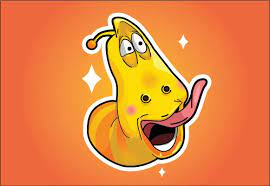

Ấu trùng tinh nghịch là một series phim hài - hoạt hình của Hàn Quốc được sáng tạo và sản xuất bởi công ty Tuba Entertainment.
Nội dung phim chủ yếu xoay quanh cuộc sống và những biến cố hài hước của 2 ấu trùng vui vẻ, tốt bụng.
Vàng - Ấu trùng Vàng đi chậm và tham ăn. Anh ta luôn lắng nghe Đỏ nhưng thường cứ đánh mất kiểm soát bản thân khi nhìn thấy thức ăn, thường hay bị đỏ bắt nạt.
Đỏ - Ấu trùng Đỏ có tính cách khó gần và thiếu kiên nhẫn. Anh ta hét lên như Bruce Lee (Lý Tiểu Long) và đá chân lên không trung mỗi khi khó chịu (mặc dù không có chân như con người).
Đỏ là một nhân vật luôn tự dằn vặt, khiến bản thân trải qua đau khổ, hầu hết bắt đầu với lòng tham cùng sự cố gắng níu giữ cho một cái gì đó.
Hồng - Ấu trùng nữ, bạn thân của Đỏ và Vàng. Đỏ say mê Hồng, nhưng Hồng thích Vàng hơn. Hồng thích Vàng,
ngay cả khi Vàng không thực sự quan tâm đến Hồng, Hồng có thể cười thích thú ngay khi nhìn thấy Vàng.